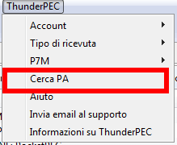
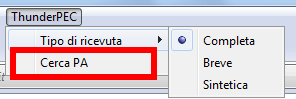
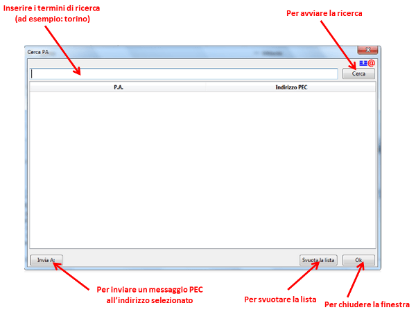
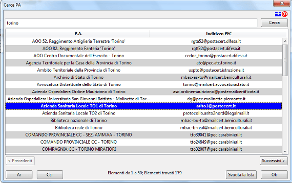

Da alcuni mesi, è disponibile il portale degli Open Data SPC (spcdata.digitpa.gov.it) che contiene i dati dell'Indice della Pubblica Amministrazione, (solo i
soggetti definiti ai sensi dell'art.2 comma 2 del CAD). Questi dati sono
stati linkati ad altri dataset pubblici.
Tra le informazioni disponibili, come evidenziato dalla pagina dei servizi, sono presenti gli indirizzi PEC degli uffici della PA.
La versione 1.3 di ThunderPEC introduce la funzionalità Cerca PA
che permette la ricerca di un particolare indirizzo PEC direttamente da
Thunderbird e costituisce il primo livello integrazione di ThunderPEC
con questa base dati semantica.
La funzionalità è disponibile sia nella finestra principale di
ThunderPEC che nella finestra di composizione di un nuovo messaggio PEC


Finestra principale di Thunderbird
Composizione di un nuovo messaggio
Utilizzando il sottomenu Cerca PA, ThunderPEC presenta una finestra di ricerca

Inseriti i termini di ricerca e premuto il tasto Cerca
(o direttamente il tasto Invio), ThunderPEC provvede ad interrogare la
base dati, attraverso l'interfaccia SPARQL disponibile all'indirizzo http://spcdata.digitpa.gov.it:8899/sparql.
IMPORTANTE: in caso di presenza di proxy/firewall, verificare la connettività verso l'indirizzo indicato
ThunderPEC provvede all'elaborazione dei termini della ricerca,
introducendo automaticamente dei caratteri jolly (wildcard) al posto
degli spazi che separano le parole (ad esempio, scrivendo "comune
torino", ThunderPEC effettuerà la ricerca di "comune*torino", restituendo "comune di torino" tra i risultati)
Come evidenziato dalla figura, la finestra presenta il pulsante Invia A:
per la composizione di un nuovo messaggio di posta elettronica
certificata verso l'indirizzo PEC selezionato. Nel caso in cui, la
finestra di ricerca fosse stata aperta dalla composizione di un nuovo
messaggio, al posto del pulante Invia A: sono presenti i tasti A: e CC: per inserire l'indirizzo PEC selezionato nel relativo indirizzo di destinazione.
L'indirizzo selezionato è evidenziato da una diversa colorazione.
Inoltre, nella parte inferiore della finestra, è presente una riga di
stato che informa l'utente sul numero totale di corrispondenze trovate.
Ogni singola ricerca è limitata a 50 risultati; se la ricerca
restituisce un numero superiore di risulati (come nell'esempio
sottoriportato), è possibile pasare al set successivo (o precedente)
attraverso il pulsante Successivi (Precedenti)

Premendo il pulsante A:/CC:/Invia A:,
l'indirizzo selezionato è inserito all'interno del nuovo messaggio PEC
(nell'esempio riportato, l'indirizzo PEC del Azienda Sanitaria Locale
TO1 è stato inserito come destinatario principale del nuovo messaggio)